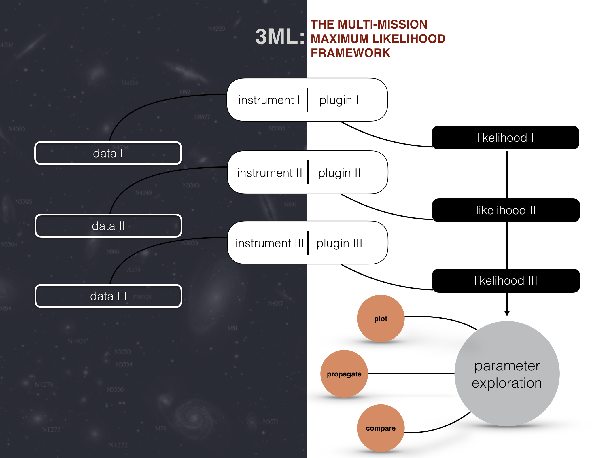

Building Custom Plugins
[1]:
import warnings
warnings.simplefilter("ignore")
import numpy as np
np.seterr(all="ignore")
[1]:
{'divide': 'warn', 'over': 'warn', 'under': 'ignore', 'invalid': 'warn'}
The 3ML instrument/data philosophy focuses on the abstraction of the data to likelihood interface. Rather than placing square pegs in round holes by enforcing a common, restrictive data format, 3ML provides an interface that takes a model and returns the likelhood value of that model with its current parameter values.

This way, the data format, likelihood formula, internal computations, etc. that are required for the given instrument can be utilized in thier native, most sensitve, and expertly handled form.
While many general and instrument specific plugins are already provided in 3ML, the ability to build a custom plugin from scratch allows for the quick interface of a new instrument, experiment, or idea into the power 3ML framework on the fly. Let’s take a look at the basic components of a plugin and construct one for ourselves.
The PluginPrototype class
The basic functionality of any plugin is prototyped in the PluginPrototype class. This is under the main directory in the 3ML source code, but let’s examine it here:
class PluginPrototype(object):
__metaclass__ = abc.ABCMeta
def __init__(self, name, nuisance_parameters):
assert is_valid_variable_name(name), "The name %s cannot be used as a name. You need to use a valid " \
"python identifier: no spaces, cannot start with numbers, cannot contain " \
"operators symbols such as -, +, *, /" % name
# Make sure total is not used as a name (need to use it for other things, like the total value of the statistic)
assert name.lower() != "total", "Sorry, you cannot use 'total' as name for a plugin."
self._name = name
# This is just to make sure that the plugin is legal
assert isinstance(nuisance_parameters, dict)
self._nuisance_parameters = nuisance_parameters
# These are the external properties (time, polarization, etc.)
# self._external_properties = []
self._tag = None
def get_name(self):
warnings.warn("Do not use get_name() for plugins, use the .name property", DeprecationWarning)
return self.name
@property
def name(self):
"""
Returns the name of this instance
:return: a string (this is enforced to be a valid python identifier)
"""
return self._name
@property
def nuisance_parameters(self):
"""
Returns a dictionary containing the nuisance parameters for this dataset
:return: a dictionary
"""
return self._nuisance_parameters
def update_nuisance_parameters(self, new_nuisance_parameters):
assert isinstance(new_nuisance_parameters, dict)
self._nuisance_parameters = new_nuisance_parameters
def get_number_of_data_points(self):
"""
This returns the number of data points that are used to evaluate the likelihood.
For binned measurements, this is the number of active bins used in the fit. For
unbinned measurements, this would be the number of photons/particles that are
evaluated on the likelihood
"""
warnings.warn(
"get_number_of_data_points not implemented, values for statistical measurements such as AIC or BIC are "
"unreliable", )
return 1.
def _get_tag(self):
return self._tag
def _set_tag(self, spec):
"""
Tag this plugin with the provided independent variable and a start and end value.
This can be used for example to fit a time-varying model. In this case the independent variable will be the
time and the start and end will be the start and stop time of the exposure for this plugin. These values will
be used to average the model over the provided time interval when fitting.
:param independent_variable: an IndependentVariable instance
:param start: start value for this plugin
:param end: end value for this plugin. If this is not provided, instead of integrating the model between
start and end, the model will be evaluate at start. Default: None (i.e., not provided)
:return: none
"""
if len(spec) == 2:
independent_variable, start = spec
end = None
elif len(spec) == 3:
independent_variable, start, end = spec
else:
raise ValueError("Tag specification should be (independent_variable, start[, end])")
# Let's do a lazy check
if not isinstance(independent_variable, IndependentVariable):
warnings.warn("When tagging a plugin, you should use an IndependentVariable instance. You used instead "
"an instance of a %s object. This might lead to crashes or "
"other problems." % type(independent_variable))
self._tag = (independent_variable, start, end)
tag = property(_get_tag, _set_tag, doc="Gets/sets the tag for this instance, as (independent variable, start, "
"[end])")
######################################################################
# The following methods must be implemented by each plugin
######################################################################
@abc.abstractmethod
def set_model(self, likelihood_model_instance):
"""
Set the model to be used in the joint minimization. Must be a LikelihoodModel instance.
"""
pass
@abc.abstractmethod
def get_log_like(self):
"""
Return the value of the log-likelihood with the current values for the
parameters
"""
pass
@abc.abstractmethod
def inner_fit(self):
"""
This is used for the profile likelihood. Keeping fixed all parameters in the
LikelihoodModel, this method minimizes the logLike over the remaining nuisance
parameters, i.e., the parameters belonging only to the model for this
particular detector. If there are no nuisance parameters, simply return the
logLike value.
"""
pass
Basic Properties
The basic properties of a plugin are its name and nuisance parameters. These are mostly handled by 3ML natively, but can be manipulated internally as needed.
name
All plugins must be given an instance name. Since it is possible that many instances of a particular plugin may be used in an analysis (many different x-ray instruments with FITS PHA data?), 3ML must be able to distinguish them from one another.
nuisance parameters
Nuisance parameters are parameters that are plugin instance dependent and not part of the inter-plugin shared likelihood model. An effective area correction for a given detector that scales its internal effective area or an internal parameter in an instrument’s software-dependent inner fit are examples of nuisance parameters.
Unique Properties
The properties that abstract the model-data-likelihood interface are the set_model, get_log_like, and inner_fit members of the plugin. These must be implemented or an error will be returned when trying to define the class.
set_model
This member is responsible for translating the astromodels Model object shared by all the plugins during an analysis to this plugin’s data. For example, the DispersionSpectrumLike plugin translates the likelihood model by setting up the convolution of the model through its energy dispersion matrix. There are no restrictions on how this interface occurs allowing for freedom in the data format and/or software that are used to calculate the model.
get_log_like
This is the member that is called by 3ML when performing parameter estimation to assess the likelihood of the plugin. It simply returns a number, the log likelihood. No restrictions are placed on how this number is calculated allowing for it to be the product of complex instrument software, mathematical formulas, etc.
inner_fit
This is used for the profile likelihood. Keeping fixed all parameters in the LikelihoodModel, this method minimizes the log likelihood over the remaining nuisance parameters, i.e., the parameters belonging only to the model for this particular detector. If there are no nuisance parameters, simply return the logLike value.
Making a custom plugin
Let’s build a simple (and useless) plugin to see how the process works. First, we import the PluginPrototype class from 3ML.
[2]:
%%capture
from threeML import PluginPrototype
If we try to create a plugin without implementing all the needed memebers, we will run into an error.
[3]:
class BadPlugin(PluginPrototype):
pass
[4]:
try:
bad_plugin = BadPlugin("name", {})
except TypeError as e:
print(e)
Can't instantiate abstract class BadPlugin with abstract methods get_log_like, inner_fit, set_model
So, let’s instead build a proper plugin
[5]:
from astromodels import Parameter
import collections
class GoodPlugin(PluginPrototype):
def __init__(self, name):
# create the hash for the nuisance parameters
nuisance_parameters = collections.OrderedDict()
# create a dummy parameter
par = Parameter(
"dummy_%s" % name,
1.0,
min_value=0.8,
max_value=1.2,
delta=0.05,
free=False,
desc="A dummy parameter for %s" % name,
)
nuisance_parameters[par.name] = par
# call the prototype constructor
super(GoodPlugin, self).__init__(name, nuisance_parameters)
def set_model(self, model):
# attach the model to the object
self._model = model
def get_log_like(self):
# this isn't going to be very useful
return -99.0
def inner_fit(self):
return self.get_log_like()
[6]:
good_plugin = GoodPlugin("name")
[7]:
good_plugin.name
[7]:
'name'
[8]:
good_plugin.get_log_like()
[8]:
-99.0
[9]:
good_plugin.nuisance_parameters
[9]:
OrderedDict([('dummy_name',
Parameter dummy_name = 1.0 []
(min_value = 0.8, max_value = 1.2, delta = 0.05, free = False))])
While our plugin is not very useful, we can now see how to build a plugin. Examine the source code of other plugins that are provided. Figure out how to interface your instrument’s model evaluation and likelihood computation to python and place these methods inside your plugin class. We have taken care of the rest.